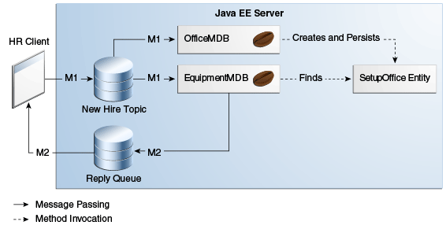

@Entity
public class SetupOffice implements Serializable { Copyright © 2017, Oracle and/or its affiliates. All rights reserved.
Copyright © 2017, Oracle and/or its affiliates. All rights reserved.
|
Java Platform, Enterprise Edition (Java EE) 8 The Java EE Tutorial |
| Previous | Next | Contents |
This section explains how to write, compile, package, deploy, and run an application that uses the JMS API with an entity. The application uses the following components:
An application client that both sends and receives messages
Two message-driven beans
An entity class
You will find the source files for this section in the tut-install`/examples/jms/clientmdbentity/` directory. Path names in this section are relative to this directory.
The following topics are addressed here:
This application simulates, in a simplified way, the work flow of a company’s human resources (HR) department when it processes a new hire. This application also demonstrates how to use the Java EE platform to accomplish a task that many JMS applications need to perform.
A messaging client must often wait for several messages from various sources. It then uses the information in all these messages to assemble a message that it then sends to another destination. The common term for this design pattern (which is not specific to JMS) is joining messages. Such a task must be transactional, with all the receives and the send as a single transaction. If not all the messages are received successfully, the transaction can be rolled back. For an application client example that illustrates this task, see Using Local Transactions.
A message-driven bean can process only one message at a time in a transaction. To provide the ability to join messages, an application can have the message-driven bean store the interim information in a Java Persistence API entity. The entity can then determine whether all the information has been received; when it has, the entity can report this back to one of the message-driven beans, which then creates and sends the message to the other destination. After it has completed its task, the entity can be removed.
The basic steps of the application are as follows.
The HR department’s application client generates an employee ID for
each new hire and then publishes a message (M1) containing the new
hire’s name, employee ID, and position. It publishes the message to a
topic because the message needs to be consumed by two message-driven
beans. The client then creates a temporary queue, ReplyQueue, with a
message listener that waits for a reply to the message. (See
Creating Temporary Destinations for more
information.)
Two message-driven beans process each message: One bean,
OfficeMDB, assigns the new hire’s office number, and the other bean,
EquipmentMDB, assigns the new hire’s equipment. The first bean to
process the message creates and persists an entity named SetupOffice,
then calls a business method of the entity to store the information it
has generated. The second bean locates the existing entity and calls
another business method to add its information.
When both the office and the equipment have been assigned, the
entity business method returns a value of true to the message-driven
bean that called the method. The message-driven bean then sends to the
reply queue a message (M2) describing the assignments. Then it removes
the entity. The application client’s message listener retrieves the
information.
Figure 49-5 illustrates the structure of this application. Of course, an actual HR application would have more components; other beans could set up payroll and benefits records, schedule orientation, and so on.
Figure 49-5 assumes that OfficeMDB is the first
message-driven bean to consume the message from the client. OfficeMDB
then creates and persists the SetupOffice entity and stores the office
information. EquipmentMDB then finds the entity, stores the equipment
information, and learns that the entity has completed its work.
EquipmentMDB then sends the message to the reply queue and removes the
entity.

Writing the components of the application involves coding the application client, the message-driven beans, and the entity class.
The following topics are addressed here:
The application client, HumanResourceClient.java, found under
clientmdbentity-app-client, performs the following steps:
Defines a topic for the application, using the java:app namespace
because the topic is used in both the application client and the EJB
module
Injects ConnectionFactory and Topic resources
Creates a TemporaryQueue to receive notification of processing
that occurs, based on new-hire events it has published
Creates a JMSConsumer for the TemporaryQueue, sets the
`JMSConsumer’s message listener, and starts the connection
Creates a MapMessage
Creates five new employees with randomly generated names, positions, and ID numbers (in sequence) and publishes five messages containing this information
The message listener, HRListener, waits for messages that contain the
assigned office and equipment for each employee. When a message arrives,
the message listener displays the information received and determines
whether all five messages have arrived. When they have, the message
listener notifies the main method, which then exits.
This example uses two message-driven beans, both under
clientmdbentity-ejb:
EquipmentMDB.java
OfficeMDB.java
The beans take the following steps.
They inject a MessageDrivenContext resource, an EntityManager,
and a JMSContext.
The onMessage method retrieves the information in the message. The
EquipmentMDB’s `onMessage method chooses equipment, based on the new
hire’s position; the OfficeMDB’s `onMessage method randomly generates
an office number.
After a slight delay to simulate real world processing hitches, the
onMessage method calls a helper method, compose.
The compose method takes the following steps.
It either creates and persists the SetupOffice entity or finds it
by primary key.
It uses the entity to store the equipment or the office information
in the database, calling either the doEquipmentList or the
doOfficeNumber business method.
If the business method returns true, meaning that all of the
information has been stored, it retrieves the reply destination
information from the message, creates a JMSProducer, and sends a reply
message that contains the information stored in the entity.
It removes the entity.
The SetupOffice.java class, also under clientmdbentity-ejb, is an
entity class. The entity and the message-driven beans are packaged
together in an EJB JAR file. The entity class is declared as follows:
@Entity
public class SetupOffice implements Serializable {The class contains a no-argument constructor and a constructor that
takes two arguments, the employee ID and name. It also contains getter
and setter methods for the employee ID, name, office number, and
equipment list. The getter method for the employee ID has the @Id
annotation to indicate that this field is the primary key:
@Id
public String getEmployeeId() {
return id;
}The class also implements the two business methods, doEquipmentList
and doOfficeNumber, and their helper method, checkIfSetupComplete.
The message-driven beans call the business methods and the getter methods.
The persistence.xml file for the entity specifies the most basic
settings:
<?xml version="1.0" encoding="UTF-8"?>
<persistence version="2.1"
xmlns="http://xmlns.jcp.org/xml/ns/persistence"
xmlns:xsi="http://www.w3.org/2001/XMLSchema-instance"
xsi:schemaLocation="http://xmlns.jcp.org/xml/ns/persistence
http://xmlns.jcp.org/xml/ns/persistence/persistence_2_1.xsd">
<persistence-unit name="clientmdbentity-ejbPU" transaction-type="JTA">
<provider>org.eclipse.persistence.jpa.PersistenceProvider</provider>
<jta-data-source>java:comp/DefaultDataSource</jta-data-source>
<properties>
<property name="eclipselink.ddl-generation"
value="drop-and-create-tables"/>
</properties>
</persistence-unit>
</persistence>You can use either NetBeans IDE or Maven to build, deploy, and run the
clientmdbentity example.
Because the example defines its own application-private topic and uses
the preconfigured default connection factory
java:comp/DefaultJMSConnectionFactory and the preconfigured default
JDBC resource java:comp/DefaultDataSource, you do not need to create
resources for it.
The following topics are addressed here:
Make sure that GlassFish Server has been started (see Starting and Stopping GlassFish Server), as well as the database server (see Starting and Stopping Apache Derby).
From the File menu, choose Open Project.
In the Open Project dialog box, navigate to:
tut-install/examples/jms/clientmdbentitySelect the clientmdbentity folder.
Click Open Project.
In the Projects tab, right-click the clientmdbentity project and
select Build.
This command creates the following:
An application client JAR file that contains the client class and listener class files, along with a manifest file that specifies the main class
An EJB JAR file that contains the message-driven beans and the entity
class, along with the persistence.xml file
An application EAR file that contains the two JAR files along with an
application.xml file
The clientmdbentity.ear file is created in the
clientmdbentity-ear/target/ directory.
The command then deploys the EAR file, retrieves the client stubs, and runs the application client.
Make sure that GlassFish Server has been started (see Starting and Stopping GlassFish Server), as well as the database server (see Starting and Stopping Apache Derby).
Go to the following directory:
tut-install/examples/jms/clientmdbentity/To compile the source files and package, deploy, and run the application, enter the following command:
mvn installThis command creates the following:
An application client JAR file that contains the client class and listener class files, along with a manifest file that specifies the main class
An EJB JAR file that contains the message-driven beans and the entity
class, along with the persistence.xml file
An application EAR file that contains the two JAR files along with an
application.xml file
The command then deploys the application, retrieves the client stubs, and runs the application client.
The output in the NetBeans IDE output window or in the terminal window looks something like this (preceded by application client container output and Maven output):
SENDER: Setting hire ID to 50, name Bill Tudor, position Programmer
SENDER: Setting hire ID to 51, name Carol Jones, position Senior Programmer
SENDER: Setting hire ID to 52, name Mark Wilson, position Manager
SENDER: Setting hire ID to 53, name Polly Wren, position Senior Programmer
SENDER: Setting hire ID to 54, name Joe Lawrence, position Director
Waiting for 5 message(s)
New hire event processed:
Employee ID: 52
Name: Mark Wilson
Equipment: Tablet
Office number: 294
Waiting for 4 message(s)
New hire event processed:
Employee ID: 53
Name: Polly Wren
Equipment: Laptop
Office number: 186
Waiting for 3 message(s)
New hire event processed:
Employee ID: 54
Name: Joe Lawrence
Equipment: Mobile Phone
Office number: 135
Waiting for 2 message(s)
New hire event processed:
Employee ID: 50
Name: Bill Tudor
Equipment: Desktop System
Office number: 200
Waiting for 1 message(s)
New hire event processed:
Employee ID: 51
Name: Carol Jones
Equipment: Laptop
Office number: 262The output from the message-driven beans and the entity class appears in the server log.
For each employee, the application first creates the entity and then finds it. You may see runtime errors in the server log, and transaction rollbacks may occur. The errors occur if both of the message-driven beans discover at the same time that the entity does not yet exist, so they both try to create it. The first attempt succeeds, but the second fails because the bean already exists. After the rollback, the second message-driven bean tries again and succeeds in finding the entity. Container-managed transactions allow the application to run correctly, in spite of these errors, with no special programming.
To undeploy the application after you have finished running it, use the
Services tab or issue the mvn cargo:undeploy command.
| Previous | Next | Contents |
Copyright © 2017, Oracle and/or its affiliates. All rights reserved.